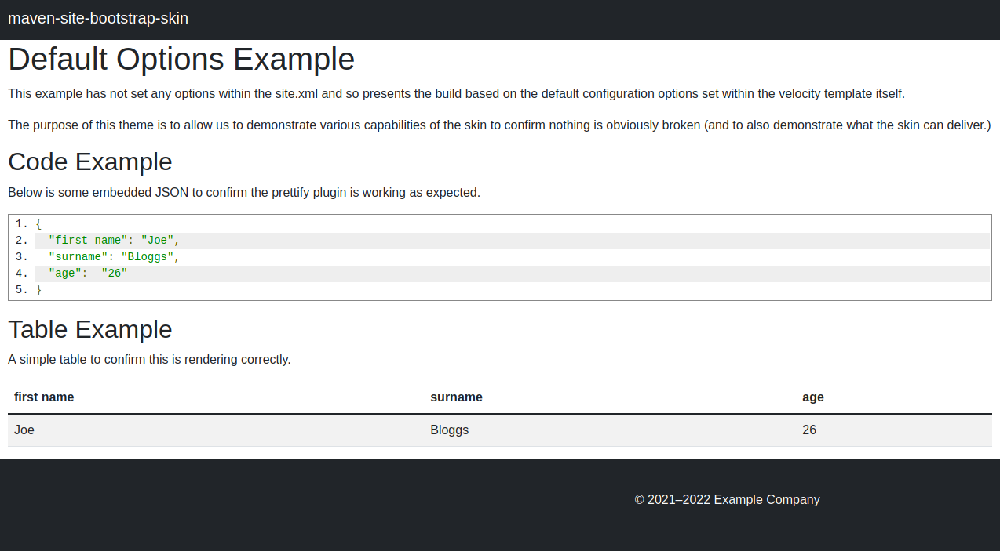
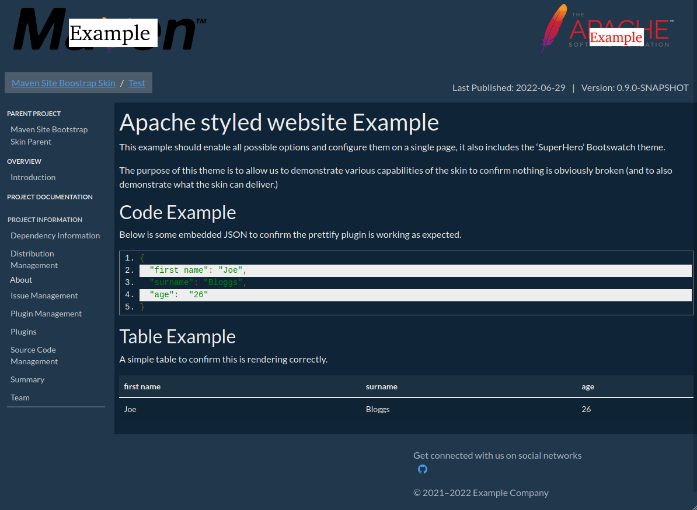
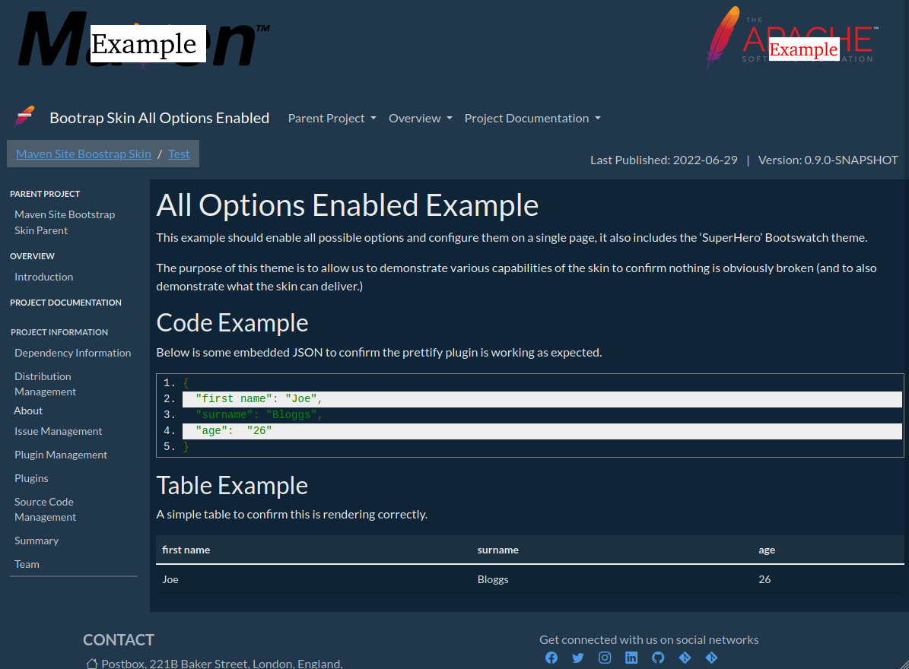

Modules
Project Documentation

This page contains a number of examples of supported skin layouts.

The above image was generated with no banner or custom sections included in the site.xml. This represents the default layout and look of the skin.

In the above image the site.xml has been configured to create the standard Apache Layout. This disables the navbar, includes banners, breadcrumbs and a sidebar.

In the above image the site.xml has every possible configuration set, this version includes breadcrumbs, version, date, banners a sidebar, contact details as well as social media. we have also altered the alignment of the drop downs menu in the navigation bar. Lastly the site directory contains a maven-theme.css file which includes the Superhero Bootswatch theme to add colouring to the website.